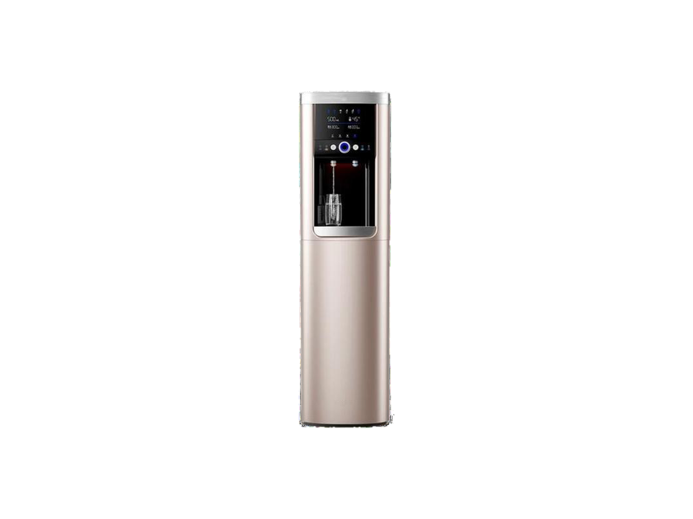
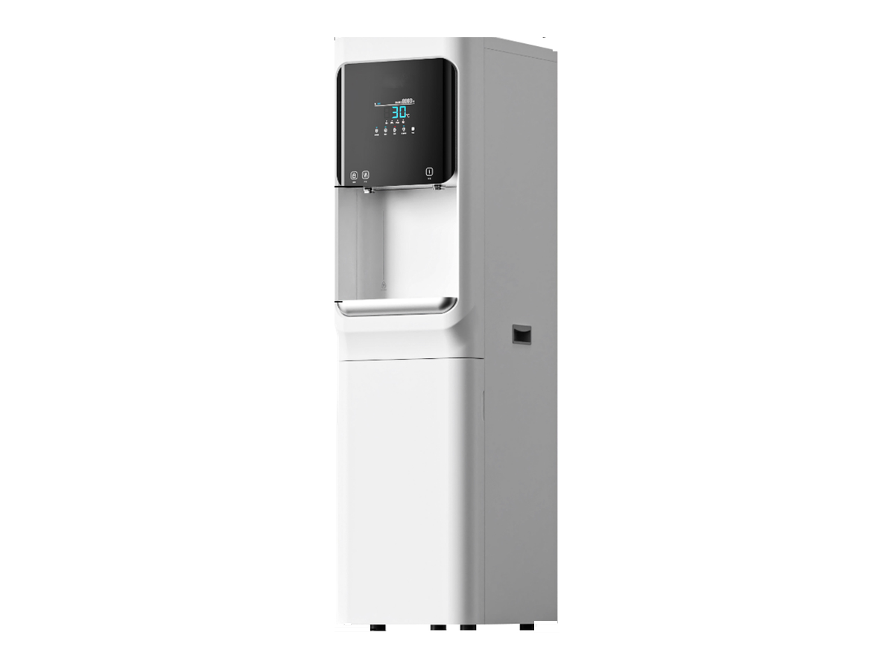

Bancada
BancadaRP-C09
Purificador RO com gelo, água quente e fria
SKU: RP-C09
MOQ: confirmar ao consultar
Início/Produtos/Sistemas comerciais/ RP-C23

Sistemas comerciais
Dispensador de água comercial de pé (A1)
RP-C23 — Dispensador de água comercial de pé. Especificação principal: RO de 100 G, água quente, fria e gelada para 50–100 pessoas. As especificações são confirmadas por modelo e pedido. Mais três variantes de pé compartilham esta página: duas variantes com tanque de água pura de 8 L e uma variante IoT — veja Variantes abaixo.
Solicitar orçamento para RP-C23
A tensão / frequência é configurável para o país de destino. Outras configurações são confirmadas por pedido.
RP-C23 é um dispensador de água comercial de pé feito para escritórios e espaços públicos. O modelo principal funciona a 100 GPD com tanque de água de 10 L e serve água quente, fria e gelada para 50–100 pessoas, com volume nominal de água purificada de 4000 L. Utiliza filtração em 5 estágios (PP + C1 + RO + C2) com esterilização UV, e a tela sensível ao toque LED mostra TDS e vida útil do filtro, com trava infantil. Quatro variantes de pé compartilham esta página: o modelo principal, duas variantes com tanque de água pura de 8 L e uma variante IoT 4G.
Qual é a quantidade mínima de pedido?
O primeiro pedido é de 200 unidades por modelo, e os pedidos de reposição são de 500 unidades.
Posso pedir uma amostra antes de um pedido em volume?
Sim. As amostras ficam prontas em 15 dias, e a taxa da amostra é reembolsada no seu primeiro pedido em grande quantidade. Os pedidos em grande quantidade levam 40 dias após a aprovação da amostra e são enviados FOB Shenzhen.
Qual variante devo escolher?
Cite como RP-C23 e especifique a variante: modelo principal (100 GPD, tanque de 10 L), variante com tanque de 8 L em acabamento branco ou ouro rosé, ou variante IoT (200–400 GPD, IoT 4G).
Quatro variantes de pé — cite como RP-C23 e especifique a variante (modelo principal, variante com tanque de 8 L em acabamento branco ou ouro rosé, ou variante IoT).
Passe o cursor sobre a imagem de uma variante para ver suas especificações. Em telas sensíveis ao toque, toque em uma imagem.



Especificações completas de cada variante, lado a lado. A tabela de especificações mais abaixo mostra os valores do modelo principal.
| Especificação | RP-C23-1 — modelo principal (A1) | RP-C23-2 — variante com tanque de 8 L, acabamento branco (AM608R) | RP-C23-3 — variante com tanque de 8 L, acabamento ouro rosé (AM629R) | RP-C23-4 — Variante IoT (S100) |
|---|---|---|---|---|
| Fator de forma | De piso (em pé) | De piso (em pé) | De piso (em pé) | De piso (em pé) |
| Capacidade RO | 100 GPD | Confirmado por pedido | Confirmado por pedido | 200–400 GPD |
| Tanque de água pura | 10 L | 8 L | 8 L | 10 L |
| Tanque de água quente | 2 L (personalizável para 5 L) | 1.8 / 5 / 10 L (opcional) | Confirmado por pedido | 7 L (personalizável para 10–12 L) |
| Potência nominal | 850 W (UF) / 900 W (RO água quente) / 950 W (RO água gelada e quente) | 850 W | 2150 W | 950 W (UF) / 1000 W (RO água quente) / 1050 W (RO água gelada e quente) |
| Água purificada total nominal | 4000 L | 3000 L | 4000 L | 5000–8000 L |
| Dimensões (C×L×A) | 310×425×1150mm | 380 × 395 × 1376 mm | 372 × 372 × 1380 mm | 400 × 480 × 1460 mm |
| Faixa de temperatura | Água quente ≥90°C; água gelada ≤15°C | Fria 10–15°C, ambiente, quente 45–99°C | Fria 10–15°C, ambiente, quente 45–99°C | Água quente >90°C; água fria nas versões com resfriamento |
| Resfriamento / gelo | Tanque de gelo eletrônico 0.6 L (opção com compressor de 3 L) | Água fria 10–15°C | Tanque de gelo eletrônico 0.7 L | Termoelétrico 0.8 L ou compressor 2 L (conforme a configuração) |
| Conectividade | Confirmado por pedido | Confirmado por pedido | Confirmado por pedido | IoT 4G |
| Filtração | 5 estágios; PP + C1 + RO + C2 | PP + carvão + RO + pós-carvão | PP + carvão + RO + pós-carvão | Filtros dedicados fornecidos pelo cliente |
| Esterilização | Esterilização UV | UV estático no tanque de água pura | UV estático no tanque de água pura | UV de longa vida + UV duplo de fluxo contínuo |
| Tensão / frequência | 220 V ~ 50 Hz; configurável conforme o país de destino | 220 V / 50 Hz; configurável conforme o país de destino | 220 V / 50 Hz; configurável conforme o país de destino | 220 V; configurável conforme o país de destino |
| Cor | Confirmado por pedido | Branco | Ouro rosé | Branco |
19 linhas de especificações do catálogo da ROPureOEM.
| Fator de forma | De piso (em pé) |
|---|---|
| Dimensões | 310×425×1150mm |
| Capacidade RO | 100 GPD |
| Tanque de água quente | 2 L (personalizável para 5 L) |
| Tanque de água | 10 L |
| Tanque de água gelada | 0.6 L eletrônico (opção com compressor de 3 L) |
| Potência nominal | 850 W (UF) / 900 W (RO água quente) / 950 W (RO água gelada e quente) |
| Potência de aquecimento | 800 W |
| Potência de resfriamento | 60 W |
| Saída de água quente (≥90°C) | 15 / 20 / 30 L/h |
| Saída de água gelada (≤15°C) | 0.6 L/h (eletrônico) / 3 L/h (compressor) |
| Água purificada total nominal | 4000 L |
| Recuperação de água purificada | ≥55% |
| Filtração | 5 estágios; PP + C1 + RO + C2 |
| Esterilização | Esterilização UV |
| Indicado para | 50–100 pessoas |
| Visor e segurança | Tela sensível ao toque LED com visor de TDS e monitoramento da vida útil do filtro; trava de segurança para crianças |
| Tensão / frequência | 220 V ~ 50 Hz; configurável conforme o país de destino |
| Outras configurações | Confirmado por pedido |
As especificações são retiradas do catálogo ROPureOEM. Quando um valor ainda não está confirmado, ele é listado como “Confirmado por pedido” — não publicamos valores não confirmados.
BancadaPurificador RO com gelo, água quente e fria
SKU: RP-C09
MOQ: confirmar ao consultar
 Bancada
BancadaRO de bancada com refrigeração por compressor
SKU: RP-C10
MOQ: confirmar ao consultar
 Bancada
BancadaSérie de água com gás — duas variantes
SKU: RP-C14
MOQ: confirmar ao consultar
 Bancada
BancadaPurificador RO com jarra aquecedora
SKU: RP-C07
MOQ: confirmar ao consultar